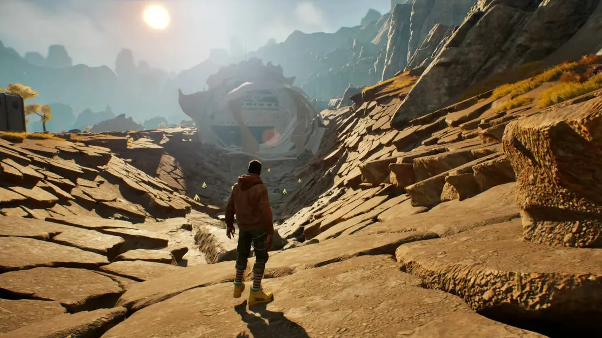
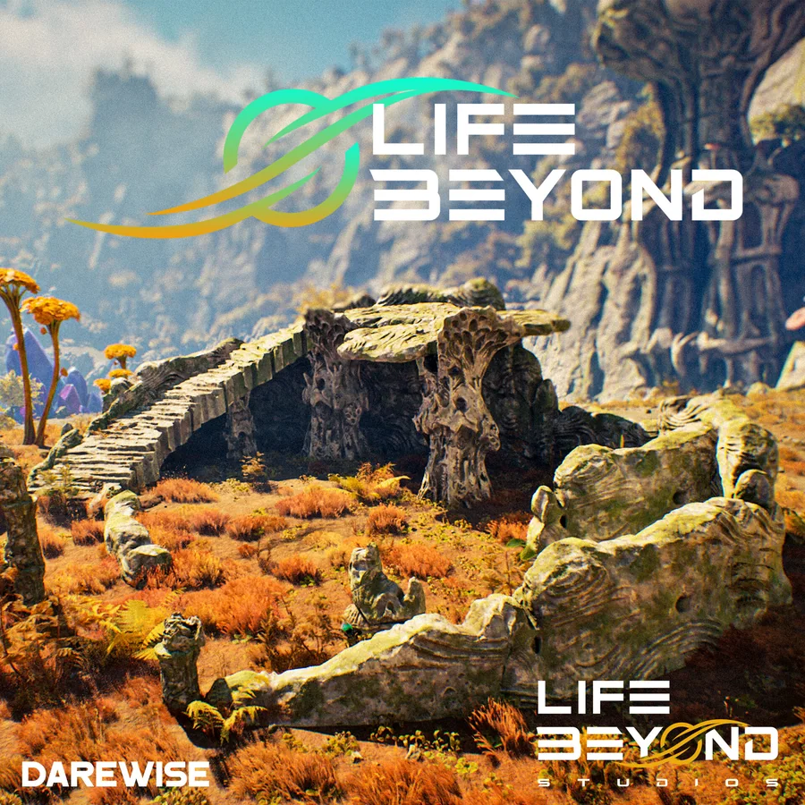
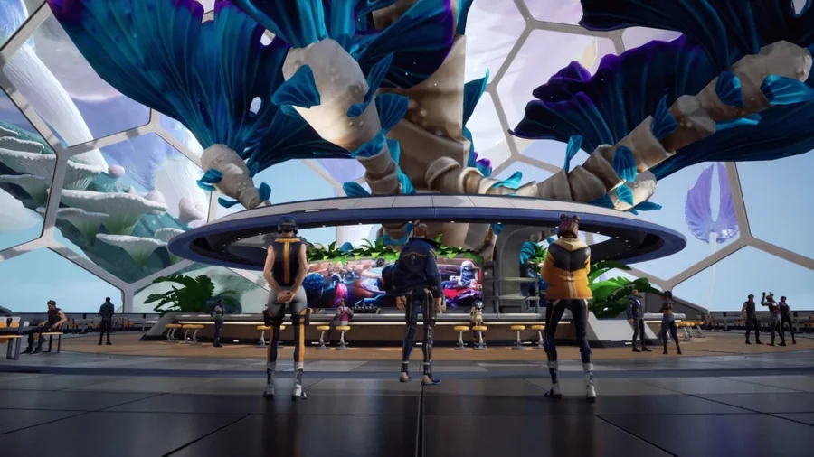
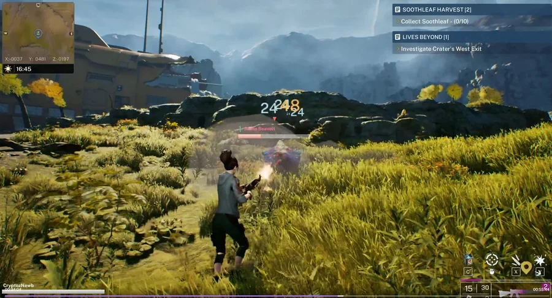
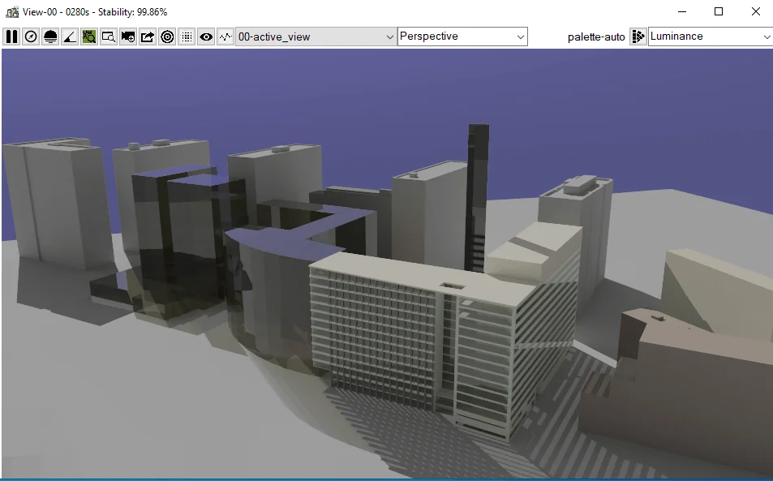
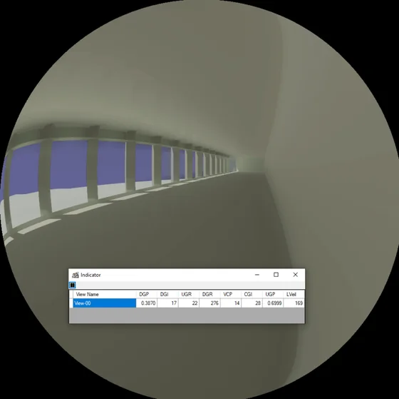
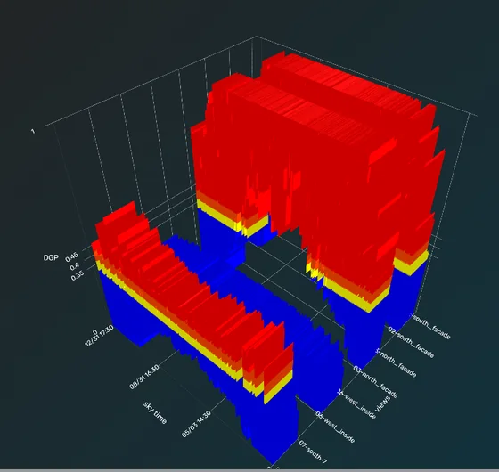
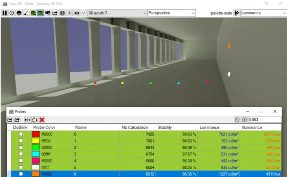
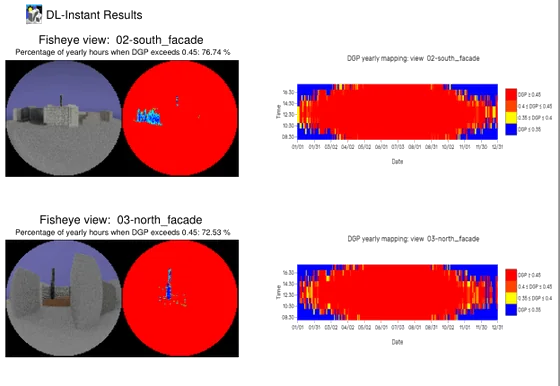

Real-Time Unreal Engine C++ Systems
Cairn and Stone Studio · 2026-09–present
Technical leadership on real-time Unreal Engine C++ systems: architecture, implementation, technical review, performance and production tooling.
Cairn and Stone Studio · 2026-09–present
Technical leadership on real-time Unreal Engine C++ systems: architecture, implementation, technical review, performance and production tooling.
Cairn and Stone Studio · 2026-09–present
A local-first runtime for AI-assisted development: planned work, bounded agent permissions, independent review and recorded evidence.


Quantic Dream · 2025-10–2026-05
Macro-loop systems for a deterministic networked MOBA: quests, inbox, rewards and player customisation.
Equativ · 2025-04–2025-09
Stabilising an advertising SSP against modern traffic: IPv6, header parsing, caching and throttling.




Darewise · 2023-09–2024-12
Gameplay systems for a survival MMO in Unreal Engine 5: inventory, map, quests, weapons and player abilities.





DeluminæLab · 2014-12–2023-09
The rendering product of a nine-year solo engagement: a CPU/GPU engine, its desktop application and the tooling that shipped it.
DeluminæLab · 2014-12–2023-09
A cluster and cloud prototype built around DL-Instant to distribute its computation, deployed on Google Cloud Platform.
Personal Project · 2012-10–2015-09
A personal game prototype in C# with XNA/MonoGame: an engine, a networking layer, its WPF tools, and the volunteer team I built and mentored.
Université Paris-Est Marne-la-Vallée · 2012-11–2014-11
Rendering research on both CPU and GPU: virtual point lights, the Lightcuts optimisation and shadow mapping methods.
Winamax · 2011-09–2012-11
Event-driven backend modules for a high-traffic poker platform: libevent, OpenAMQ and multithreaded C++.
Strass Productions · 2010-09–2011-09
Client/server and network protocol work for an MMORPG, with the gameplay, UI and back-office tools around it.
Mikros Image · 2008-10–2010-09
A professional network for post-production: access control, identity and directory integration, and the compute grid beneath it.